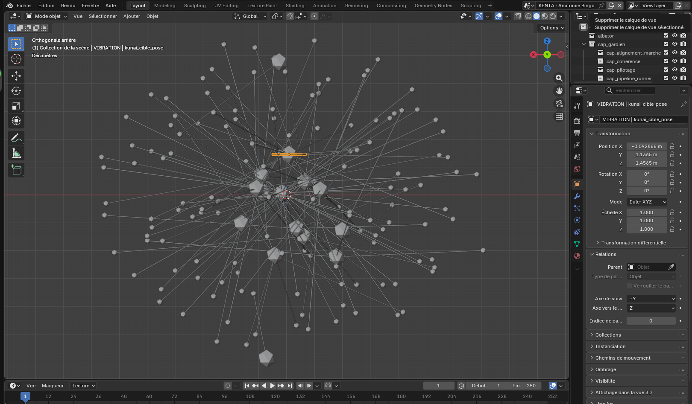

Le savoir dans l’ADN
Les bibliothèques portent les fonctions. L’ADN et la mission portent le sens et les conditions de l’action.
ORGANISME NUMÉRIQUE SOUVERAIN · IA SYMBOLIQUE
Une vingtaine de gardiens coopèrent sur une même Toile. Une déclaration ouvre l’action. Le vote du collège qualifie les organes candidats. Chaque résultat laisse une trace. Aucun nuage, aucun modèle de langage aux commandes.
En développement continu, et pleinement assumé : KENTA grandit comme un organisme, cellule après cellule.
Un octaèdre à plat. Une architecture de relations.
01 · DOCTRINE
KENTA ne comprend pas : il réduit vers une action interne ou demande clarification. Ce refus de feindre est sa force.
Les bibliothèques portent les fonctions. L’ADN et la mission portent le sens et les conditions de l’action.
Chaque organe porte un geste générique. La mission dit où, quoi, pourquoi, comment.
Ni scrutation, ni minuterie, ni démon. La chaîne s’ouvre par un geste déclaré et se referme d’elle-même.
Le collège des gardiens examine les propositions d’organes. Le sceau collégial atteste sa décision.
Les modèles de langage locaux lisent et parlent. Ils ne modifient rien, et ne parlent qu’après avoir vu.
Trois états qu’on ne confond jamais. Déclarer sans incarner, c’est mentir.
Ce que KENTA n’est pas. Ni chatbot, ni orchestrateur, ni moteur de workflow, ni arbre de décision. Héritier de l’IA symbolique des origines, celle de McCarthy et Minsky, pas des réseaux de neurones.
02 · LES APPLICATIONS
De Byakugan à Gaïa, de Rythma aux Cercles. Chaque fiche dit ce que fait l’application, avec qui elle coopère et où elle en est.
03 · COMBINAISONS
Aucune n’appelle l’autre : elles se lisent sur la Toile. Leur rencontre produit ce qu’aucune ne sait faire seule.
04 · LES GARDIENS
Chaque gardien n’a qu’une identité et sait, par son ADN, à quoi il résonne. Ensemble, ils perçoivent, soignent, archivent, se défendent et font naître.
ATLAS · REPRÉSENTATION
Vue de travail réalisée dans Blender, avec des nœuds, des relations et des volumes.

05 · TERMINAL
Tapez une commande ou écrivez une intention en français. Cette démonstration autonome s’exécute dans votre navigateur.
Projection vivante du registre : gardien, capacité, liens de chaîne.
06 · KENTA
Pour une présentation du produit, contactez KENTA.